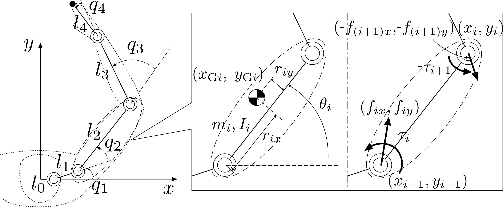

Inverse Dynamics
Motion is produced by forces. For a human arm, muscle tensions pull on the bones; for a robot, motors drive the joints. The branch of mechanics that ties forces to motion is dynamics, and it answers two complementary questions:
- Forward dynamics — what acceleration results from a given set of forces?
- Inverse dynamics — what forces are required to produce a desired acceleration?
This page covers the inverse problem: given the configuration, velocity, and acceleration of every joint, find the actuator torques that generate them. The solution is a single backward sweep along the chain, from the endpoint to the base, applying Newton–Euler equations link by link.

Inertia and forces acting on link \(i\) of a four-joint arm. The center of mass sits at offsets \(r_{ix}\) (along the link) and \(r_{iy}\) (perpendicular to it).
1. Mass properties and the center of mass
Each link \(i\) is characterized by its mass properties, which depend only on the body and not on its motion: the mass \(m_i\), the first moments \(m_i x_{Gi}, m_i y_{Gi}\), and the moment of inertia \(I_i\) about the center of mass (CoM).
The CoM does not generally lie on the line between joints. It is placed at a longitudinal distance \(r_{ix}\) along the link and a perpendicular offset \(r_{iy}\) from it, so that
where \((x_{i-1}, y_{i-1})\) is the origin of joint \(i\) and \(\theta_i\) the absolute link angle. Differentiating twice in time (and reusing the joint-origin velocities and accelerations from the differential kinematics) gives the CoM velocity \((\dot{x}_{Gi}, \dot{y}_{Gi})\) and acceleration \((\ddot{x}_{Gi}, \ddot{y}_{Gi})\).
2. Newton–Euler equations for one link
With the CoM acceleration known, the net force and torque needed to drive link \(i\) follow directly from Newton's and Euler's laws:
where \((f_{Gix}, f_{Giy})\) is the resultant force at the CoM and \(n_{Gi}\) the resultant torque about it. Gravity is omitted: the arm operates on a horizontal plane.
3. Where the forces come from
Three kinds of force act on a link:
- Actuation — the joint torque \(\tau_i\) delivered by the motor (the lumped equivalent of muscle tension).
- Constraint \((f_{ix}, f_{iy})\) — the force transmitted through joint \(i\) by the adjoining link to keep the connection intact. It acts at \((x_{i-1}, y_{i-1})\).
- External \((f_{Eix}, f_{Eiy})\) — any load from the environment (a push, a contact), acting at an arbitrary point \((x_{Ei}, y_{Ei})\).
By Newton's third law, the distal link \(i+1\) reacts on link \(i\) with \((-f_{(i+1)x}, -f_{(i+1)y})\) and \(-\tau_{i+1}\) at the far joint \((x_i, y_i)\). Collecting all contributions, the resultant force and torque are
External load in the implementation
In skelarm, fex/fey hold the external force in the world frame,
while rex/rey give its application point in the link-local frame,
measured from that link's joint. A force at the endpoint, for example, uses
rex = link length, rey = 0.
4. The backward recursion
At the endpoint there is no distal link, so \(f_{(n+1)x} = f_{(n+1)y} = 0\) and \(\tau_{n+1} = 0\). Solving the balance equations above for the constraint force and the actuation torque turns them into a recursion that runs from \(i = n\) down to \(i = 1\).
The constraint force at joint \(i\) supports the link's own inertial load plus whatever the distal link transmits, less any external force already supplied:
Taking moments about the proximal joint \((x_{i-1}, y_{i-1})\) gives the actuator torque:
Each geometric term is a 2-D cross product (moment arm \(\times\) force) about the joint: from the distal joint force, the external force, and the link's own inertial force at the CoM respectively.
5. Implementation
compute_inverse_dynamics realizes this sweep:
- Run
compute_forward_kinematicsto obtain the CoM accelerations and joint positions. - Iterate \(i = n, \dots, 1\) (the base link
links[0]is fixed and carries no torque). - Form the link's inertial force \(f_{Gi} = m_i \ddot{p}_{Gi}\) and torque \(n_{Gi} = I_i \ddot{\theta}_i\).
- Accumulate the constraint force from the distal link and the external load.
- Sum the moments about the proximal joint to obtain \(\tau_i\), stored on each
movable link (and exposed as the
tauvector).
The result obeys a checkable property: in static equilibrium (zero velocity
and acceleration, no gravity) with only an endpoint force, every joint torque must
equal minus the moment of that force about the joint. The
tests/test_static_equilibrium.py suite verifies exactly this for the typical
poses suggested in the lesson — a straight arm pushed along and across its length,
an L-shaped pose, and several oblique configurations — which is the simplest way
to confirm the force computation by hand. Full numerical validation against
forward dynamics follows in the next chapter.